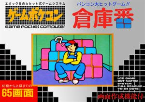

Epoch Game Pocket Computer
Released: 1984
5 games
The Epoch Game Pocket Computer, usually just referred to as Game Pocket Computer, and also known as the Pokekon is a second generation (1976–1992) handheld video game console developed and distributed by Epoch Co. It was released on November 1984 in Japan at a retail price of ¥12,000. The console was not released outside of Japan. The Game Pocket Computer was the first handheld with interchangeable cartridges. The console was discontinued sometime 1985.
| Cover | Title | Year | Genre | Publisher | Developer |
|---|---|---|---|---|---|

|
Asutorobonbā | 1984 | Shooter | Epoch | Epoch |

|
Burokkumeizu | 1984 | Action • Puzzle | Epoch | Epoch |

|
Pocket Computer Mahjong | 1984 | Board Game • Casino | Epoch | Epoch |

|
Pocket Computer Reversi | 1984 | Board Game • Strategy | Epoch | Epoch |
|
 |
Soukoban | 1984 | Puzzle | Epoch | Thinking Rabbit |